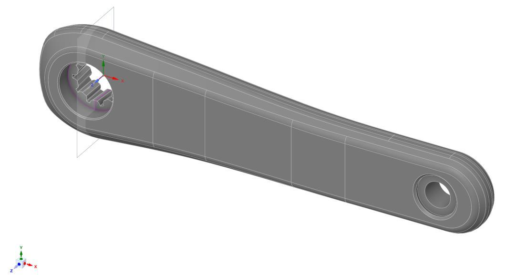
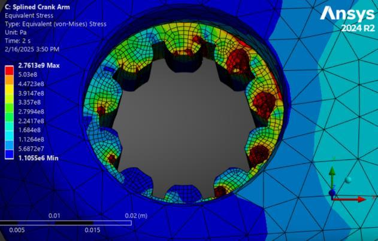
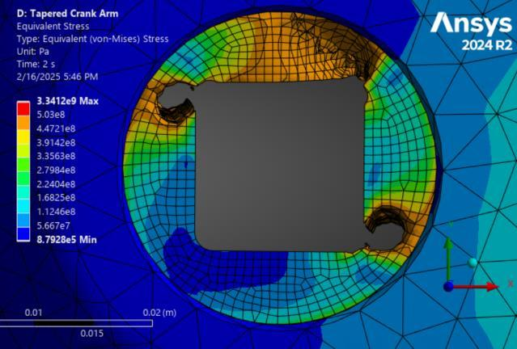

Finite-element analysis
Bicycle crank-arm structural analysis
Comparing two spindle interfaces through model checks, joint loading, and local stress analysis.
- Timeline
- Dec 2024 — Feb 2025
- Context
- Structural modeling & comparison
- Tools & methods
Team: Jacob Cockerill, Noah Bast

Overview
We compared splined and tapered bicycle crank arms to understand how the spindle connection affects local stress. Both models used 7075-T6 aluminum and the same prescribed loading. The work progressed from simplified analytical checks to detailed finite-element models with bolt pretension and locally refined meshes.
Checking the modeling approach
Before analyzing the crank arms, we built simplified models subjected to bending and torsion. We compared normal and shear stresses at selected cross-section locations with analytical calculations, then checked how those stresses changed with mesh refinement. These benchmarks helped assess the loading, constraints, and element choices before applying them to the more complex geometries.
Representing the connection
The final ANSYS static structural models used linear-elastic material properties and beam elements to represent the steel bolts. A 1 kN bolt preload was applied first and locked for the second load step. We then applied a 4.15 kN remote force at the pedal attachment, offset 55 mm from the counterbore face. Compression-only supports represented the loaded surfaces of the spindle connection.
Refining the mesh where it mattered
We used higher-order solid elements and concentrated refinement around the spindle openings while retaining a coarser mesh along the arm. Convergence was evaluated using the maximum von Mises stress along a selected edge path at each connection. The final local element sizes were 0.5625 mm for the splined model and 0.75 mm for the tapered model, with less than 2% change in that metric on the final refinement.
What the comparison showed
The reported maximum stresses along the selected paths were approximately 397 MPa for the splined design and 544 MPa for the tapered design. The tapered result exceeded the assigned 503 MPa yield strength, while the full-field contours showed local stress concentrations in both designs. The comparison identified the tapered interface as the greater concern under the modeled loading. With linear-elastic materials, these results indicate potential yielding, not a prediction of permanent deformation or fracture.
Project details

Open full-size figure

Open full-size figure